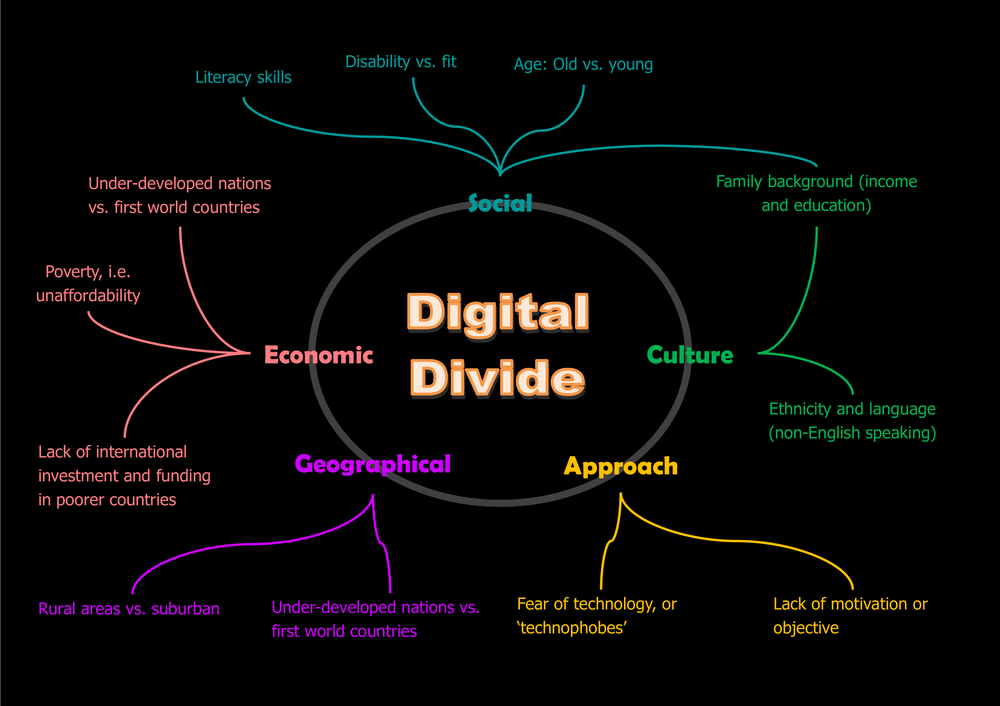
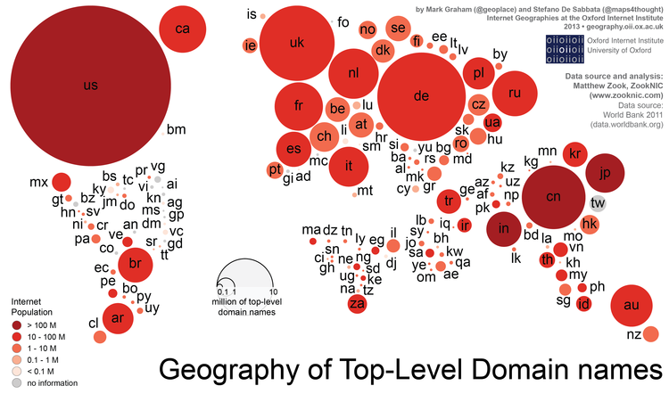

Introduction
This blog seeks to reflect and analyse the digital divide, its effect, nuances, and roots across different countries. I wish to put forward the question: with the growth of technology around the world, how is the information brought about this technology, disseminated, accessed and who does it favour?
Based on the present data, it can be determined that there are clear issues present in the sharing of information. Currently, the demarcation of information is evident when one browses the internet. Users of the internet are group mainly to Europe, America or global. The homogenization of users to “global” becomes very problematic, especially when internet cultures are so diverse. This is a prime example of the Internet catering to first world countries. There are not just small differences, these are differences that create are shocking.
The background.
The notion of “information geography’’ reveals that the source and authenticity of information is mediated through network’s affordances and constraints that exist as separate entities. By jumping from a specific area as a source, to another area of consumption based on the distribution infrastructure, information becomes a mobile entity. Technology provides the means to drastically increase the depth of information gathering and dissemination. This gives us the ability to produce large-scale data collection structures that expands the consumer’s overall encyclopedism.
Social media in this context is used to denote any technology that enables the collection, dissemination, and collating of knowledge over the web. In this sense, I understand the web as a medium for education, with positive and negative effects attached to it.
In the twenty first century, the internet has been overarchingly influential in ho society develops communication, up to the rise of digital vernaculars like the language of memes. This is a testament to the accomplishments and influence that internet technologies has on society. In most countries, digital engagement is dependent on the accessibility of internet to communicate information effectively across various platforms. The number of users worldwide is influenced by the factor of affordability as service quality differs from one place to another. For example, Asia alone holds 42% of the world’s internet population. This is more than the combined number of users across Europa and North America. African countries support less users due to economic conditions such as a lower rate of income. There are of course other reasons that influence the level of internet participation around the world. The distribution of collaborative coding hosted by platforms such as GitHub enables publishers to expand and share projects with each other. Content producers are dependent on GitHub services to host websites or track changes across projects.
The distribution of Internet access across countries is uneven. For example, Asia contains 42% of the world’s Internet users. Most countries in Europe have 80% or more Internet penetration, meaning 80% or more of the population have access to the Internet. In contrast, “over 20 sub-Saharan African countries have an Internet penetration of less than 10%”. The access to Internet has a direct correlation to the access to information. If a person does not have access to the Internet, they do not have access to all the information present on the Internet.
Another issue of Internet access across countries is the cost of broadband. The paper states that the relative affordability of broadband is the biggest issue. For example, the cost of broadband in Europe may be expensive, but being able to afford broadband takes a few hours of work. An astonishing line in the paper explains that one year of a broadband subscription costs the equivalent of 50 years of work.
Geographies of participation.
Domain names are measured as an indication of content produced. The paper analysed how many domain names are registered in each country. The majority of domain names are registered in Europe or North America. In America, there is approximately 1 domain name for every three Internet users, where Asia has one registered domain name for 40 Internet users. This is interesting as Asia has the largest population of Internet users. Analysing these numbers shows that just because a country has a large Internet population, there may not be a large amount of domain registrations. This shows that Europe and America are the largest producers of digital content. There is a large discrepancy between the intake of information and the production of information.

GitHub is a code hosting service that programmers use to publish code. North America and Europe count for a third of all GitHub users. The Middle East, North Africa and sub-Saharan Africa are home to fewer than 1% of GitHub users. This shows that the contribution of developing programmes is disproportionality based in North America and Europe. Code development does not take place as much in the Middle East and Africa.
Wikipedia is the world's largest and most used encyclopaedia. Looking at Wikipedia’s data gives a good indication of how information is shared. Wikipedia allows anyone with an Internet connection to contribute. Once again, North America is one of the largest contributors to Wikipedia. Other large contributors include Germany, the United Kingdom and France. The paper states that Africa’s contributions are so low that Hong Kong alone contributes more than the whole continent combined.
Geographies of representation.
The information available for each country on OpenStreetMap. The United States and Europe had the most information available, with California containing more content on the app than the entire continent of Africa. The content in the Freebase database and Geonames was analysed. It showed that the United States has the largest concentration in Freebase with 45%. Geonames has more content for the United States alone than the whole continent of Asia.
Do Info geographies matter?
Based on the present data, it can be determined that there are clear issues present in the sharing of information. Currently, the demarcation of information is evident when one browses the internet. Users of the internet are group mainly to Europe, America or global. The homogenization of users to “global” becomes very problematic, especially when internet cultures are so diverse. This is a prime example of the Internet catering to first world countries. There are not just small differences, these are differences that create are shocking.
It can be determined that countries that are impoverished are most affected by the digital divide. “Information is critical in facilitating productivity” [1]. If third world countries cannot get access to information, they cannot be as productive as first world countries. This assists in creating more of an economic divide amongst countries. The bridging of this digital divide will bridge communication gaps between different cultures. The illiterate people in third-world countries will benefit from increased access to information.
Bibliography
Graham M. De Sabbata S. Zook M. 2016. a study of information geographies. University of Oxford.